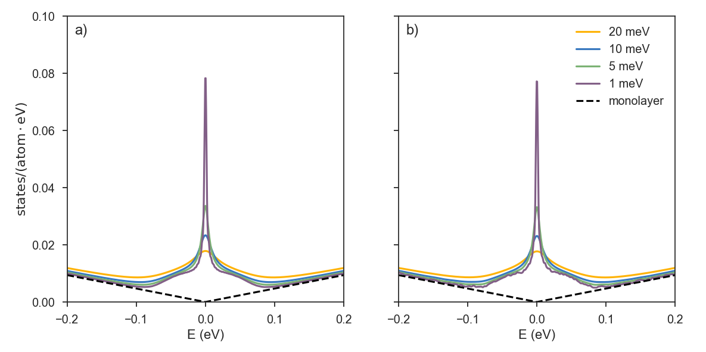
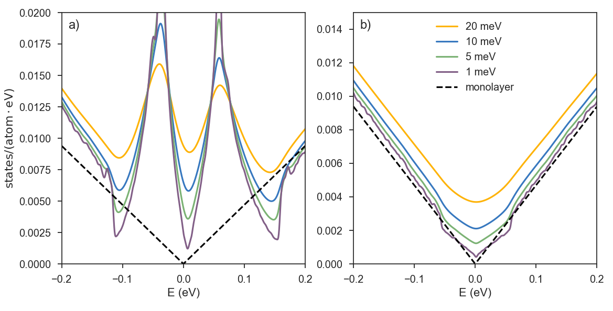

Large Systems
So far, we have considered several examples which can be reproduced on a standard desktop computer. However, the main purpose of creating KITE was to build a flexible software for systems exceeding billions of atoms (which is key to achieve high-energy resolution). Hence, in the following tutorial we will tackle the simulation of real-size 2D crystals with lateral dimensions in the micrometer range.
Graphene lattice with vacancy disorder¶
We used KITE to simulate two disordered graphene flakes, having more than 8.9 (giant) and 0.5 (large) billion of atoms.
The concentration of vacancy defects is 0.1%, while the number of moments used in the calculation is 15000.
The two plots below show the impact of vacancy-induced zero energy modes on the average density of states (ADoS).
The system in plot a) has a size of l1 = 65536; l2=65536, while in plot b) , l1 = 8064; l2=8192.
The dashed curve represents the ADoS of pristine graphene and the solid curves show the ADoS of disorder graphene for different resolutions: yellow (20 meV), blue (10 meV), green (5 meV), purple (1 meV).
There is an important difference in the two plots which is related to the lattice size.
The limiting factor for observing fine details in the ADoS (and other typical KITE functions) is the mean level spacing, which is limited by the system size.
This can be appreciated when attempting to simulate a relatively small system with a high energy resolution, as in the case of plot b) with 1 meV resolution:
the spurious oscillations in the ADoS indicate that the discrete nature of the energy spectrum is being resolved.
Probing a small system with high resolution can result in non-physical effects.
Working with high resolutions (and consequently large systems) is especially important when dealing with localization and other quantum criticality problems1.
g
If you would like to reproduce these results, we recommend running the script dos_vacancies.py in the Github repository.
Note that the RAM requirements for running DOS on the large system specified above requires ~5GB of RAM memory and around 20 minutes on a compute node with 28 cores.

Moiré pattern¶
The second example is a large twisted bilayer graphene lattice in the clean limit, with the number of atoms exceeding ~0.7 billion.
The model Hamiltonian 2 of such a system has a much larger coordination number (average number of neighbors per site).
The key parameter when estimating the execution time (and the memory requirements) is the "effective" size, which is the product of the number of sites and the coordination number.
Depending on the rotation angle between adjacent layers, the resulting moiré pattern may strongly impact the low-energy electrons. For high twist angles, the two layers are effectively decoupled and the van Hove singularities (VHSs) are far from the charge neutrality point. As the angle is decreased, the VHSs "move" towards lower energies and eventually merge, forming flat bands. This phenomenon occurs for the so-called "magic" angles, which are of great interest as they provide a rich playground to study unconventional states of matter ranging from Mott insulators to superconductors.
Plots a) and b) show the ADoS for rotation angles of 2.005 (low) and 13.741 (high) degrees, respectively.
As in the previous case of disordered graphene, the finer spectral details become visible when performing computations with a good resolution. High twist angles give rise to properties more similar to Bernal-stacked bilayer graphene.
At low angles, the spectrum is much richer, and the linear spectrum of the two layers is fully changed due to the induced Moiré pattern.
Apart from a slight electron-hole asymmetry, at high energies, the ADoS in both cases follow that of monolayer graphene. Note the appearance of small spurious oscillations when the ADoS is reconstructed from the Chebyshev moments with too fine a broadening (1 meV).
Interestingly, the small twist-angle system has more states in the low-energy region of the spectrum than the large-twist angle system, consistent with a smaller mean level spacing.
Thus, for high energy resolution (1 meV) in plot b) we can see the appearance of the aforementioned oscillations, while the same ADoS plot in plot a) looks very smooth near the charge neutrality point.
When considering an arbitrary system, both the requested energy resolution and the system size will be reflected on the level of details one is able to distinguish.

Below, you can find a script used to configure the KITE model for twisted bilayer graphene. The lattice of twisted bilayer graphene (especially at low rotation angles) has a much more complex unit cell compared to common Bernal-stacked bilayer graphene, where for an arbitrary twist angle, one does not have access to all relevant neighboring sites using a small set of connecting vectors. A more advanced algorithm is needed for finding the unit cell connections 3. In this example, we use a pre-defined lattice object that is loaded with a simple command:
# define the angle
angle = 21.787 # or 13.174, 7.341, 2.005
# define the name of the pb.Lattice object
name = 'lattice_tblg_{:.3f}'.format(angle)
#load the lattice
lattice = pb.load(name)
Now, you can continue with specifying the other configuration settings as explained in Getting Started.
The full script can be downloaded here; see also the KITE paper examples' folder.
-
A. Ferreira and E. Mucciolo, Phys. Rev. Lett. 115, 106601 (2015) ↩
-
P. Moon and M. Koshino, Phys. Rev. B 85, 195458 (2012). ↩
-
S. M. João et al, R. Soc. open sci. 7, 191809 (2020) ↩